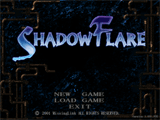
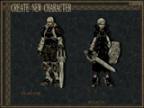
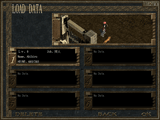

| - ゲームを始める - |
| |
| ゲームを起動すると、まずタイトル画面が表示されます。 |
 |
| NEW GAME |
新しくキャラクターを作成し、最初からゲームを始めます。
セーブデータが6つ存在する場合は表示されなくなります。
そのときは、LOAD GAME 画面でセーブデータを削除してください。 |
| LOAD GAME |
前回プレイした続きからゲームを始めます。
セーブデータがまだ一つもない場合は表示されません。 |
| EXIT |
ゲームを終了します。 |
|
| |
|  |
タイトル画面で NEW GAME を選択するとキャラクター作成画面が表示されます。
まず、男性キャラクター、女性キャラクターのどちらかをクリックして選択してください。
その後、名前の入力に移ります。
ここには半角19文字までの自由なキャラクター名を入力していただけますが、
ネットワークプレイではここで入力したキャラクター名が他のプレイヤーに表示されますので、
そのことも考えた上で名前を決めてください。
名前の入力が終わりましたら、画面右下の「OK」ボタンをクリックするか、
エンターキーを押してください。 |
|
| |
タイトル画面で LOAD GAME を選択すると前回プレイしたゲームのロード画面が表示されます。
画面に表示されている1から6までの番号のついたボックスは
それぞれセーブデータをあらわしています。
「No Data」と表示されているボックスはセーブデータが入っていないことを意味しています。
ロードするセーブデータをクリックして選択し、「OK」ボタンを押してください。
既存のセーブデータを削除したい場合は画面左下の「DELETE」をクリックしてください。 |
 |
|
| |
 |
キャラクター作成画面、ロード画面で「OK」を押すとゲームモードを選択するためのウィンドウが開きます。 |
| ONLINE MODE |
ネットワークを通じて複数の人と一緒にゲームをプレイするときに選択します。
オンラインモードの説明はオンラインモードの始め方を参照してください。 |
| SINGLE MODE |
一人でプレイするときに選択します。
ここを選択するとロード画面の後、ゲームが始まります。 |
| BACK |
ウィンドウを閉じて、前の画面（キャラクタ作成画面、またはロード画面）に戻ります。 |
|